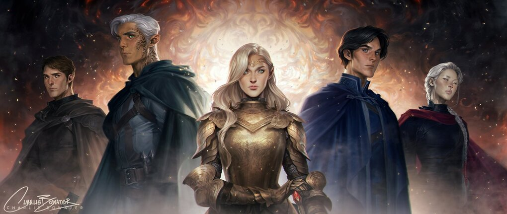

About Aelin
Aelin Ashryver Whitethorn Galathynius, formerly and also known as Celaena Sardothien, is the Lost Princess, the Queen of Terrasen, and the last surviving member of the Galathynius bloodline. Aelin is the main protagonist of the Throne of Glass series.
Aelin and friends.
Aelin’s characteristics
- She’s fierce
- She’s strong
- She’s smart
- She’s likes making plans and telling no one